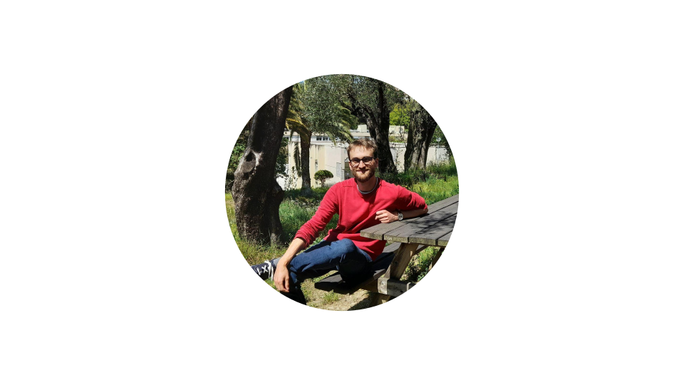

Tristan Bruel
PhD Student
Hi, I'm Tristan! I'm a 2nd year PhD Student at the Observatoire de la Côte d'Azur (Lagrange laboratory) in Nice, France. In my work I study some of the most extreme events in the Universe: the mergers of two black holes. Using their gravitational wave emissions (or 'ripples' in space-time), I aim to understand how, when, and where these systems formed. I am a member of the LIGO-Virgo-KAGRA Collaboration.
office adress: Batiment Fizeau, 28 Av. Valrose, 06000 Nice, FRANCE
email: tristan.bruel at oca.eu